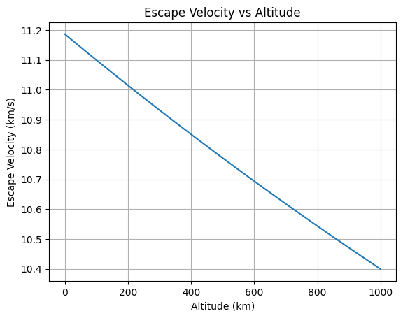

Problem 3
Trajectories of a Freely Released Payload Near Earth
Before diving into theory, explore how real spacecraft move using NASA’s official 3D simulation platform:
🌐 NASA Eyes on the Solar System
Real-time orbits, mission tracking, and gravity interactions!
🎯 Motivation
When a payload is released from a moving rocket near Earth, it may follow various trajectories depending on its initial velocity and position. This problem blends orbital mechanics and numerical simulations — essential for tasks like satellite deployment, reentry, and interplanetary missions.
🌍 Governing Physics
To better understand gravitational attraction and orbital motion, you can explore this interactive simulation:
Visualize how mass, distance, and velocity affect planetary orbits and satellite motion in real time!
Newton's Law of Gravitation
The gravitational force on the payload is:
- \( G = 6.674 \times 10^{-11} \, \text{m}^3/\text{kg s}^2 \)
- \( M = 5.972 \times 10^{24} \, \text{kg} \) (Earth's mass)
- \( m \): Payload mass (cancels out in acceleration)
- \( r \): Distance from Earth's center
Using Newton's Second Law:
🌌 Orbital Energy and Trajectories
Total specific mechanical energy of the payload:
- \( \epsilon < 0 \): Elliptical orbit (bound)
- \( \epsilon = 0 \): Parabolic trajectory (escape)
- \( \epsilon > 0 \): Hyperbolic trajectory (escape)
Escape velocity at distance \( r \):
Escape velocity decreases with altitude since gravitational pull weakens. It is given by:
Below is a plot showing how escape velocity changes with altitude:

🧮 Numerical Simulation (Euler Method)
We simulate the payload motion using small time steps.
Assumptions:
- 2D motion (x, y)
- Only gravitational force from Earth
- Earth is a point mass at the origin
📦 Python Implementation
import numpy as np import matplotlib.pyplot as plt
G = 6.67430e-11 M = 5.972e24 R_earth = 6.371e6
altitude = 300e3 r0 = R_earth + altitude v0 = 7500 theta = np.radians(0)
x = [r0] y = [0] vx = [0] vy = [v0]
dt = 1 t_max = 8000 N = int(t_max / dt)
for i in range(N): r = np.sqrt(x[-1]2 + y[-1]2) ax = -G * M * x[-1] / r3 ay = -G * M * y[-1] / r3
vx_new = vx[-1] + ax * dt
vy_new = vy[-1] + ay * dt
x_new = x[-1] + vx_new * dt
y_new = y[-1] + vy_new * dt
if np.sqrt(x_new**2 + y_new**2) <= R_earth:
break
vx.append(vx_new)
vy.append(vy_new)
x.append(x_new)
y.append(y_new)
plt.figure(figsize=(8, 8)) earth = plt.Circle((0, 0), R_earth, color='blue', alpha=0.3, label='Earth') plt.gca().add_patch(earth)
plt.plot(x, y, label='Payload Trajectory', color='red') plt.xlabel('x [m]') plt.ylabel('y [m]') plt.title('Payload Trajectory Near Earth') plt.axis('equal') plt.grid(True) plt.legend() plt.show()
🔍 Explore Further: Beyond Earth
While this project focuses on payloads near Earth, it's also valuable to understand more complex gravitational dynamics.
🎥 SkyMarvels™ – Solar System Barycenter
How the Sun moves due to gravitational pulls from the planets — visualized with Celestia.

Barycenters explain why the Sun itself moves slightly — important for understanding motion in multi-body systems.